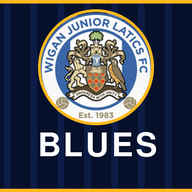

Touchline tour
Wigan Junior Latics U15 Blues
Captions are on the screen. Tap a section to jump to it.
Open Touchline
Something not working?
Tell Tim or Deano at training or on the group and we will sort it.